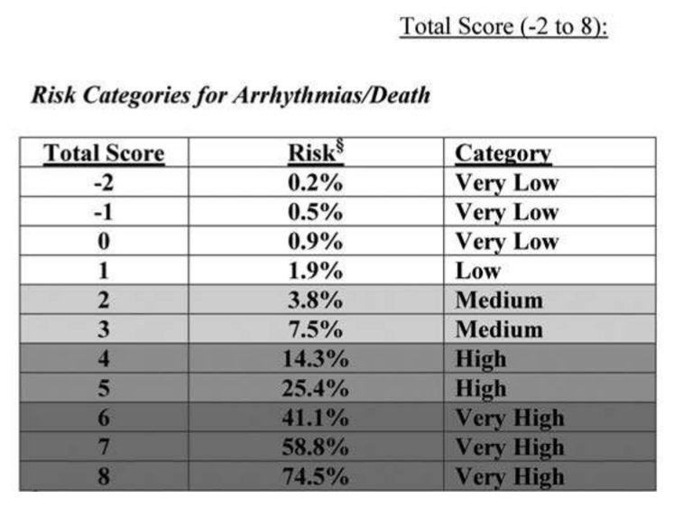
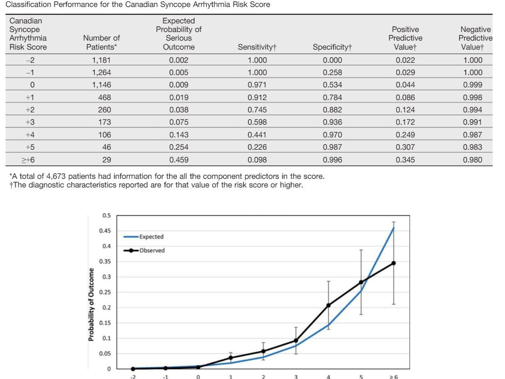
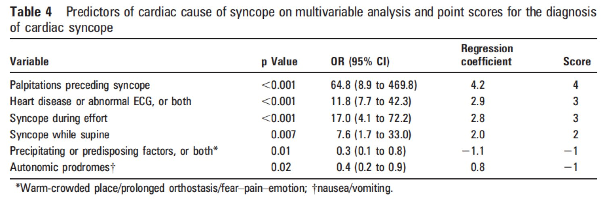
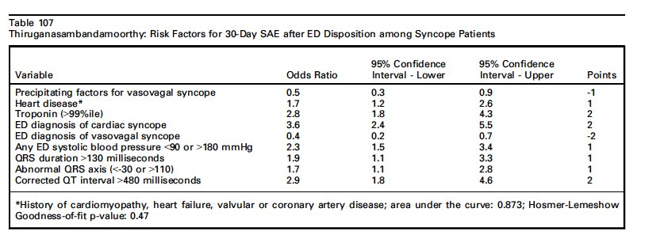

08/04/2015 — Thăm dò ngất tại khoa cấp cứu: sau hỏi bệnh và khám lâm sàng, điện tâm đồ là xét nghiệm duy nhất cần làm cho mọi bệnh nhân…..
Bản dịch tiếng Việt của bài "Emergency Department Syncope Workup: After H and P, ECG is the Only Test Required for Every Patient….." – Dr. Smith’s ECG Blog. Giữ nguyên toàn bộ 4 hình ảnh của bản gốc.
Tóm tắt cách tiếp cận ngất (syncope) tại khoa cấp cứu (ED)
Xin thứ lỗi vì các lỗi định dạng mà tôi chưa sửa được!
Tôi đã dùng tài liệu này để giảng dạy cho các bác sĩ nội trú của chúng tôi, và tôi nghĩ họ thấy nó hữu ích. Đây KHÔNG phải là một tổng quan có cấu trúc hay một phân tích gộp (meta-analysis).
Cách tiếp cận ngất
Định nghĩa ngất: Mất ý thức thoáng qua kèm mất trương lực tư thế và hồi phục hoàn toàn, tự phát, không cần can thiệp y tế.
Trước tiên: Bạn có chắc đó là ngất, chứ không phải CO GIẬT (SEIZURE)?
Ngược lại, ngất thường kèm một đợt ngắn hoạt động co cứng-co giật (tonic-clonic) giống như co giật.
Tìm nguyên nhân mạch máu — hãy nghĩ tới những nguyên nhân này trong lúc hỏi bệnh sử, tiền sử và khám lâm sàng (H and P):
–Chảy máu: vỡ phình động mạch chủ bụng (AAA), xuất huyết tiêu hóa, vỡ thai ngoài tử cung,
các chảy máu tự phát khác như vỡ phình động mạch mạc treo. Kiểm tra: [dấu hiệu sinh tồn, siêu âm bụng/chậu, siêu âm động mạch chủ, dấu hiệu sinh tồn tư thế, xét nghiệm tìm máu (heme test),
hemoglobin, test thai nước tiểu (UPT)]
–Đột quỵ (nguyên nhân gây ngất rất hiếm gặp; phải là cơn thiếu máu não thoáng qua (TIA), vì ngất hàm ý tính hồi phục được): xuất huyết dưới nhện (đau đầu dữ dội ngay lúc ngất), TIA
(phải là TIA hệ đốt sống-thân nền hoặc TIA bán cầu ở bệnh nhân đã từng đột quỵ bán cầu bên kia) Kiểm tra: [bệnh sử, khám thần kinh]
–Tắc nghẽn: thuyên tắc phổi (khó thở?), bóc tách động mạch chủ,
bệnh van tim (đặc biệt là hẹp van động mạch chủ), chèn ép tim. Kiểm tra: [dấu hiệu sinh tồn, khó thở (SOB), đau ngực, siêu âm]
Nếu bệnh nhân có đau bụng, đau ngực, khó thở hoặc giảm oxy máu, đau đầu, hạ huyết áp, thì những triệu chứng này nên được xem là lý do chính đến khám nguyên phát (chứ không phải ngất). Hầu hết các bác sĩ sẽ tự động lo ngại trước những triệu chứng này. Nếu bệnh nhân có dấu hiệu sinh tồn bất thường (sốt, hạ huyết áp, nhịp tim nhanh, thở nhanh, hoặc giảm oxy máu), thì đây là vấn đề chính cần giải quyết, vì đang có một bệnh lý tiếp diễn cần được xác định.
Cũng cần nghĩ tới giảm thể tích tuần hoàn, mất nước không do chảy máu: dấu hiệu sinh tồn tư thế có thể phát hiện tình trạng này [xem Mendu và cs. (3)].
Ngất thực sự: Ngược lại, nếu bệnh nhân khỏe, không có triệu chứng nghiêm trọng nào khác, có nhịp xoang bình thường, và khám lâm sàng bình thường, thì bạn cần chắc chắn rằng cơn ngất không phải do một rối loạn nhịp chậm hoặc rối loạn nhịp nhanh nguy hiểm có thể tái phát.
Xem trang web này để có hệ thống tính điểm trực tuyến tốt nhất cho quy tắc Canada: www.teamvenk.com/csrs
Ngất do tim (“ngất thực sự”)
Các yếu tố dự báo độc lập của kết cục bất lợi
tổng hợp từ nhiều nghiên cứu
1. Điện tâm đồ bất thường – tìm dấu hiệu
ngất do tim.
a. Điện tâm đồ (ECG) bất thường: được định nghĩa (theo quy tắc ngất San Francisco) là
bất kỳ thay đổi mới nào so với điện tâm đồ gần nhất, hoặc có nhịp không phải nhịp xoang.
Nếu không có điện tâm đồ cũ, điện tâm đồ được xếp là bất thường nếu có
bất kỳ bất thường nào. Tuy nhiên, định nghĩa San Francisco này quá thiếu đặc hiệu, nên tôi liệt kê dưới đây các bất thường điện tâm đồ đặc hiệu hơn:
b. Đặc biệt, hãy chú ý tới các dấu hiệu gợi ý những bệnh lý sau:
QT dài
(ít nhất 480-500ms), hình thái Brugada, loạn sản thất phải (RV dysplasia), WPW, bệnh cơ tim phì đại tắc nghẽn (HOCM)
c. Và các dấu hiệu sau đến từ các nghiên cứu OESIL, EGSYS và Sarasin:
i: Nhịp không phải nhịp xoang
ii: SVT hoặc VT (hiển nhiên, và dù sao điều này cũng tạo ra một dấu hiệu sinh tồn bất thường)
iii. Blốc AV độ 2 hoặc độ 3, hoặc khoảng ngưng xoang ít nhất 2 giây
iv. Blốc nhánh phải (BBB) kèm blốc phân nhánh (blốc hai phân nhánh)
v. Blốc nhánh trái
vi. Bằng chứng thiếu máu cục bộ cấp (có thể kín đáo)
vii. Sóng Q bệnh lý
viii. LVH (phì đại thất trái) hoặc RV [người dịch: nguyên văn ghi “RV”, nhiều khả năng là lỗi đánh máy của RVH – phì đại thất phải]
d. Bất thường nhưng ít đáng lo hơn:
i. PAC thường xuyên hoặc lặp lại
ii. Blốc nhánh phải đơn độc hoặc chậm dẫn truyền trong thất
iii. PVC (ngoại tâm thu thất)
Những dấu hiệu thường không được xem là điện tâm đồ bất thường: PAC đơn độc, blốc AV độ một, nhịp chậm xoang với tần số 35-45, và bất thường ST-T không đặc hiệu (kể cả khi khác với điện tâm đồ cũ).
2. Tuổi trên 65 (Sarasin và STePS)
3. Tiền sử bệnh tim mạch (mọi nghiên cứu):
Đặc biệt là bất kỳ tiền sử suy tim hoặc bệnh tim cấu trúc nào, kể cả bệnh van tim
4. Ngất không có tiền triệu, không có yếu tố khởi phát (EGSYS)
5. Hemoglobin dưới 10 (quy tắc SF)
6. Ngất khi gắng sức (EGSYS)
7. Ngất khi đang nằm ngửa (EGSYS)
8. Hồi hộp đánh trống ngực trước khi ngất (giá trị cao nhất trong thang điểm EGSYS)
9. Các yếu tố dự báo âm tính của kết cục bất lợi:
Có máy tạo nhịp
Tiền ngất (presyncope) hay “gần ngất”, nhưng vẫn còn một nguy cơ nhỏ (5, 18)
Hai yếu tố cuối này được xác định trong các nghiên cứu, nhưng tôi coi chúng là những dấu hiệu và triệu chứng nguy hiểm tự thân, như đã nêu ở trên:
10. Hạ huyết áp (hiển nhiên)
11. Khó thở (SOB) hoặc giảm oxy máu (hiển nhiên)
Ngất do phản xạ phế vị (vasovagal) (ngất do cơ chế thần kinh-tim hay ngất phản xạ) là nguyên nhân thường gặp nhất của ngất do tim, kể cả ở bệnh nhân có bệnh tim: Trong bệnh cảnh này, có CẢ đáp ứng nhịp chậm và/hoặc đáp ứng giảm áp mạch (vasodepressor). Do đó, nếu ghi nhận được nhịp chậm xoang vào thời điểm ngất, và không nghi ngờ blốc AV mức độ cao, thì điều này rất hữu ích. Các triệu chứng báo trước (buồn nôn, xanh tái, vã mồ hôi, đỏ bừng mặt), hoặc các yếu tố khởi phát (Valsalva, đau, xúc động, đứng lâu, mất nước) rất hữu ích cho chẩn đoán. Ngất do phản xạ phế vị nhìn chung lành tính.
Trong EGSYS, các triệu chứng báo trước này là yếu tố dự báo âm tính của kết cục bất lợi.
Cuối cùng, phần lớn những điều này tương quan tốt với Thang điểm nguy cơ rối loạn nhịp trong ngất của Canada (Canadian Syncope Arrhythmia Risk Score) mới, công bố năm 2016; kết quả được trình bày bên dưới trong phần Thư mục có chú giải.
Xem trang web này để có hệ thống tính điểm trực tuyến tốt nhất cho quy tắc Canada: www.teamvenk.com/csrs
Tóm tắt:
Ở những bệnh nhân thực sự có ngất là lý do chính đến khám (không phải co giật, không phải đau bụng, đau ngực, hạ huyết áp, khó thở, đau đầu, và dấu hiệu sinh tồn cùng nhịp tim bình thường tại khoa cấp cứu), và sau khi
đã loại trừ các vấn đề chảy máu, đột quỵ và tắc nghẽn, chúng ta còn lại
các yếu tố dự báo đáng lo ngại sau:
Điện tâm đồ bất thường – tìm dấu hiệu ngất do tim.
QRS dài hơn 130 ms,
nhịp không phải nhịp xoang, thiếu máu cục bộ
QT dài hơn 480 ms,
HOCM, WPW, loạn sản thất phải, Brugada típ 1
Sóng Q chẩn đoán nhồi máu cơ tim cũ
Tuổi trên 65-90 (yếu tố dự báo không tốt lắm)
Tiền sử bệnh tim mạch (bệnh van tim,
suy tim sung huyết (CHF), nhồi máu cơ tim)
(hoặc BNP cao hoặc troponin tăng)
Ngất không có tiền triệu, hoặc
khi gắng sức, hoặc khi nằm ngửa, hoặc có hồi hộp đánh trống ngực trước đó
Hemoglobin dưới 10,0 g/dL
Hạ huyết áp (hiển nhiên!)
Khó thở hoặc giảm oxy máu (hiển nhiên!)
(độ bão hòa oxy dưới 94%??)
Tiền sử gia đình có người đột tử trước 40 tuổi
Các yếu tố dự báo
âm tính:
có máy tạo nhịp, chỉ tiền ngất hoặc gần ngất
Thăm dò đánh giá (ý kiến của Smith dựa trên y văn)
Luôn đánh giá bằng:
1.
Hỏi bệnh và khám lâm sàng kỹ lưỡng, bao gồm
a. dấu hiệu sinh tồn
tư thế
b. nghe tim (hẹp van động mạch chủ);
c. tiền sử gia đình (FHx) có đột tử.
2.
Điện tâm đồ
Cân nhắc ở một số bệnh nhân:
Siêu âm
động mạch chủ, siêu âm tim
Dịch tự do
ổ bụng (siêu âm FAST)
Hemoglobin (Hgb)
Test thai nước tiểu ở phụ nữ trong độ tuổi sinh đẻ
BNP (peptide lợi niệu natri típ B)
Troponin (xét nghiệm)
D-dimer (xét nghiệm)
Nhập viện và/hoặc thăm dò thêm:
–Các triệu chứng nghiêm trọng thường bắt buộc nhập viện và/hoặc thăm dò thêm: đau ngực, khó thở, đau bụng, đau đầu dữ dội, hoặc hạ huyết áp
–Cho nhập viện theo dõi những bệnh nhân có dấu hiệu thực thể đáng lo ngại gợi ý một nguyên nhân nghiêm trọng
—Cho nhập viện theo dõi những bệnh nhân có từ 1-2 yếu tố nguy cơ cao trở lên (trong trường hợp tiền ngất hoặc gần ngất, vốn có nguy cơ thấp hơn nhiều so với ngất hoàn toàn, thường cần nhiều hơn một yếu tố nguy cơ cao)
–Lý tưởng nhất là tất cả các yếu tố dự báo này nên được nghiên cứu bằng phân tích đa biến để xem có yếu tố nào đồng biến (covariate) hay không. Cho đến lúc đó, tôi coi bất kỳ yếu tố nào trong số này là yếu tố nguy cơ bất lợi độc lập.
—Cuối cùng, một đơn vị chuyên về ngất có thể cải thiện việc đánh giá và kết cục (17).
Thư mục có chú giải
Để có một tổng quan xuất sắc về xử trí ngất tại khoa cấp cứu, xem bài viết này của Kessler C và cs. trên EM Clinics of North America năm 2010 (link toàn văn)
Để có một tổng quan đầy đủ về ngất và toàn bộ việc xử trí ngất ngoài môi trường khoa cấp cứu, hãy xem Hướng dẫn năm 2009 của Hội Tim mạch châu Âu (European Society of Cardiology) (pdf toàn văn).
Nghiên cứu gần đây nhất và có lẽ tốt nhất là nghiên cứu sau:
Thang điểm nguy cơ rối loạn nhịp trong ngất của Canada (Canadian Syncope Arrhythmia Risk Score).
Thiruganasambandamoorthy, V., Stiell, I., Sivilotti, M., Rowe, B., Mukarram, M., Arcot, K., . . . Baumann, B. (2017). Predicting Short-term Risk of Arrhythmia among Patients With Syncope: The Canadian Syncope Arrhythmia Risk Score (Dự báo nguy cơ rối loạn nhịp ngắn hạn ở bệnh nhân ngất: Thang điểm nguy cơ rối loạn nhịp trong ngất của Canada). Tạp chí Academic Emergency Medicine., 24(11), 1315-1326.
Thang điểm này phức tạp, nhưng các tác giả đã xây dựng một điểm số dựa trên các biến sau:
1. Cơ địa dễ ngất do phản xạ phế vị (nơi nóng và đông người, đứng lâu, sợ hãi, xúc động, đau): (-1)
2. Tiền sử bệnh tim (+1)
3. Bất kỳ trị số huyết áp tâm thu nào tại khoa cấp cứu dưới 90 hoặc trên 180 mm Hg (+1)
4. Troponin trên bách phân vị thứ 99 (+1)
5. Thời gian QRS trên 130 msec (+2)
6. Khoảng QTc trên 480 msec (+1)
7. Chẩn đoán tại khoa cấp cứu là ngất do phản xạ phế vị (-1)
8. Chẩn đoán tại khoa cấp cứu là ngất do tim (+2)
*Chẩn đoán tại khoa cấp cứu do bác sĩ cấp cứu đưa ra theo hướng dẫn của Hội Tim mạch châu Âu, vốn được thể hiện rõ qua các ý tưởng trình bày ở đây.




Các nghiên cứu khác
1) Thang điểm EGSYS (link toàn văn). Del Rosso A, và cs. Clinical predictors of cardiac syncope at
initial evaluation in patients referred urgently to general hospital: the EGSYS (tên bài, tiếp theo)
score. Tạp chí Heart, 2008;94(12):1620–6. (Tên bài: Các yếu tố dự báo lâm sàng của ngất do tim khi đánh giá ban đầu ở bệnh nhân được chuyển gấp tới bệnh viện đa khoa: thang điểm EGSYS.)


2) Quy tắc ngất Boston (Boston syncope rule): J Emerg Med. 2007 Oct; 33(3): 233–239. (link toàn văn)
Sự hiện diện của bất kỳ một trong 8 tiêu chuẩn sau có độ nhạy 97% và độ đặc hiệu 62% đối với kết cục bất lợi: 1) dấu hiệu hội chứng vành cấp (ACS), 2) bệnh lý dẫn truyền, 3) tiền sử tim mạch đáng lo ngại (ví dụ: rối loạn nhịp, máy tạo nhịp), 4) bệnh van tim, 5) tiền sử gia đình (FHx) có đột tử, 6) giảm thể tích tuần hoàn, 7) dấu hiệu sinh tồn bất thường
kéo dài, 8) biến cố thần kinh trung ương (CNS) nguyên phát
_____________________________________________________________________________
3) Mendu ML và cs. Yield of Diagnostic Tests in Evaluating Syncopal Episodes in Older Patients (Hiệu quả chẩn đoán của các xét nghiệm trong đánh giá cơn ngất ở bệnh nhân cao tuổi)
Tạp chí Arch Intern Med, ngày 27 tháng Bảy năm 2009; 169:1299-1305.
Bình luận của Heidenreich PA. Tạp chí Arch Intern Med, ngày 27
tháng Bảy năm 2009; 169:1262.
Một bình luận khác của Quinn JV. Tạp chí Arch
Intern Med, ngày 27 tháng Bảy năm 2009; 169:1305. (bắt đầu ở cuối bài báo, trang 1305)
a. Hạ huyết áp tư thế đứng là quan trọng
Bối cảnh: Cơn ngất thường gặp ở người cao tuổi; nguyên nhân dao động từ lành tính đến đe dọa tính mạng. Chúng tôi xác định tần suất, hiệu quả chẩn đoán và chi phí của các xét nghiệm được chỉ định để đánh giá người cao tuổi bị ngất. Chúng tôi cũng tính chi phí trên mỗi xét nghiệm có kết quả hữu ích và xác định liệu Quy tắc ngất San Francisco (San Francisco Syncope Rule, SFSR) có cải thiện hiệu quả chẩn đoán của xét nghiệm hay không.
Phương pháp: Hồi cứu 2.106 bệnh nhân liên tiếp từ 65 tuổi trở lên nhập viện sau một cơn ngất.
Kết quả: Điện tâm đồ (99%), theo dõi từ xa (telemetry) (95%), men tim (95%) và chụp cắt lớp vi tính (CT) sọ não (63%) là các xét nghiệm được chỉ định thường xuyên nhất. Men tim, CT, siêu âm tim, siêu âm động mạch cảnh và điện não đồ đều chỉ ảnh hưởng tới chẩn đoán hoặc xử trí ở <5% số ca và chỉ giúp xác định nguyên nhân ngất trong <2% số lần. Huyết áp tư thế, chỉ được thực hiện ở 38% số cơn ngất, có hiệu quả cao nhất về mặt ảnh hưởng tới chẩn đoán (18-26%) hoặc xử trí (25-30%) và xác định nguyên nhân của cơn ngất (15-21%).
Chi phí trên mỗi xét nghiệm có ảnh hưởng tới chẩn đoán hoặc xử trí cao nhất đối với điện não đồ (32.973 $), CT (24.881 $) và men tim (22.397 $), và thấp nhất đối với huyết áp tư thế (17-20 $). Hiệu quả chẩn đoán và chi phí của các xét nghiệm tim mạch tốt hơn ở những bệnh nhân đáp ứng so với không đáp ứng SFSR. Ví dụ, chi phí trên mỗi xét nghiệm men tim có ảnh hưởng tới chẩn đoán hoặc xử trí là 10.331 $ ở những người đáp ứng, so với 111.518 $ ở những người không đáp ứng SFSR.Kết luận: Nhiều xét nghiệm không cần thiết được chỉ định để đánh giá ngất. Lựa chọn xét nghiệm dựa trên hỏi bệnh và khám lâm sàng, đồng thời ưu tiên các xét nghiệm rẻ hơn và có hiệu quả chẩn đoán cao hơn, sẽ bảo đảm một cách tiếp cận có cơ sở hơn và hiệu quả hơn về chi phí khi đánh giá bệnh nhân cao tuổi bị ngất.
_____________________________________________________________________________
4) Reed MJ. Nghiên cứu ROSE (Risk Stratification of syncope in the emergency department – phân tầng nguy cơ ngất tại khoa cấp cứu). Tạp chí J Am Coll
Cardiol, 2010; 55:713-721, doi:10.1016/j.jacc.2009.09.049
Mục tiêu: Mục tiêu của nghiên cứu này là
xây dựng và thẩm định một quy tắc quyết định lâm sàng (CDR) để dự báo
kết cục nghiêm trọng trong 1 tháng và tử vong do mọi nguyên nhân ở bệnh nhân đến
khoa cấp cứu vì ngất.
Bối cảnh: Ngất là một
tình trạng thường gặp, có khả năng nghiêm trọng, chiếm một tỷ lệ lớn
ca nhập viện. Phương pháp: Đây là một nghiên cứu quan sát, tiến cứu, đơn
trung tâm trên người lớn đến
khoa cấp cứu vì ngất. Một quy tắc quyết định lâm sàng (CDR) được xây dựng từ 550
bệnh nhân trong một nhóm xây dựng (derivation cohort) và được kiểm định trong một nhóm thẩm định gồm
thêm 550 bệnh nhân khác. Kết quả:
Kết cục nghiêm trọng hoặc tử vong do mọi nguyên nhân trong một tháng xảy ra ở 40 (7,3%)
bệnh nhân trong nhóm xây dựng. Các yếu tố tiên đoán độc lập là nồng độ peptide lợi niệu natri
não (brain natriuretic peptide) lớn hơn 300 pg/ml (tỷ số chênh
[OR]: 7,3), xét nghiệm máu ẩn trong phân
dương tính (OR: 13,2), hemoglobin dưới 90 g/l (OR: 6,7), độ bão hòa oxy dưới 94% (OR: 3,0), và sóng Q trên điện tâm đồ
lúc đến khám (OR: 2,8). Kết cục nghiêm trọng hoặc
tử vong do mọi nguyên nhân trong một tháng xảy ra ở 39 (7,1%) bệnh nhân trong nhóm thẩm
định. Quy tắc ROSE (Risk stratification Of Syncope in the Emergency
department – Phân tầng nguy cơ ngất tại khoa cấp cứu) có độ nhạy
và độ đặc hiệu lần lượt là 87,2% và 65,5%, và giá trị
tiên đoán âm là 98,5%. Riêng nồng độ peptide lợi niệu natri typ B
(BNP) tăng đã là một yếu tố tiên đoán chính của các kết cục tim
mạch nghiêm trọng (8 trên 22 biến cố, 36%) và tử vong do mọi nguyên nhân
(8 trên 9 ca tử vong, 89%).
Kết luận: Quy tắc ROSE có độ nhạy và giá trị tiên đoán
âm rất tốt trong việc nhận diện bệnh nhân ngất nguy cơ
cao. Là một thành phần của quy tắc, BNP dường như là yếu tố tiên đoán chính của
kết cục tim mạch nghiêm trọng và tử vong do mọi nguyên nhân. Quy tắc ROSE
và việc đo BNP có thể là những công cụ phân tầng nguy cơ có giá trị
ở bệnh nhân đến cấp cứu vì ngất và giờ đây cần được
thẩm định ngoài.
__________________________________________________________________________
5) Sun BC và cs. Predictors of 30-day serious events in
older patients with syncope (Các yếu tố tiên đoán biến cố nghiêm trọng trong 30 ngày ở bệnh nhân ngất cao tuổi). Ann Emerg Med tháng Mười hai năm 2009; 54:769.
Mục tiêu nghiên cứu: Chúng tôi xác định các yếu tố tiên đoán biến cố nghiêm trọng trong 30 ngày sau
ngất ở người cao tuổi. Phương pháp: Chúng tôi
đã xem xét
hồ sơ bệnh án của người cao tuổi (tuổi ≥60) đến một trong 3 khoa cấp cứu (ED) vì ngất
hoặc gần ngất trong giai đoạn từ 2002 đến 2005.
Kết cục chính là sự xuất hiện của một biến cố nghiêm trọng đã định nghĩa trước trong vòng 30 ngày
sau khi được đánh giá tại ED. Chúng tôi dùng hồi quy logistic đa biến để xác định
các yếu tố tiên đoán biến cố nghiêm trọng trong 30 ngày. Kết quả:
Trong 3.727 bệnh nhân có khả năng đủ điều kiện, 2.871 (77%) đáp ứng mọi tiêu chuẩn
chọn vào. Chúng tôi loại thêm 287 bệnh nhân được chẩn đoán một
tình trạng lâm sàng nghiêm trọng ngay khi còn ở ED. Trong nhóm nghiên cứu cuối cùng
(n=2.584), chúng tôi ghi nhận 173 (7%) bệnh nhân gặp biến cố nghiêm trọng trong 30
ngày. Các yếu tố tiên đoán nguy cơ cao gồm tuổi
trên 90, giới nam, tiền sử rối loạn nhịp, huyết áp tâm thu lúc phân loại (triage)
trên 160 mm Hg, điện tâm đồ bất thường và nồng độ
troponin I bất thường. Một yếu tố tiên đoán nguy cơ thấp là than phiền gần ngất thay vì
ngất. Một thang điểm nguy cơ, tạo ra bằng cách cộng các yếu tố tiên đoán nguy cơ cao và
trừ đi yếu tố tiên đoán nguy cơ thấp, có thể phân tầng bệnh nhân thành các nhóm nguy cơ thấp (tỷ lệ biến cố
2,5%; khoảng tin cậy [KTC] 95% 1,4% đến 3,6%), trung bình (tỷ lệ biến cố
6,3%; KTC 95% 5,1% đến 7,5%) và cao (tỷ lệ biến cố 20%; KTC 95% 15% đến 25%)
. Kết luận: Chúng tôi đã xác định
các yếu tố tiên đoán biến cố nghiêm trọng trong 30 ngày sau ngất ở người lớn từ 60 tuổi
trở lên. Một thang điểm đơn giản có thể phân tầng các bệnh nhân này thành các nhóm
nguy cơ khác biệt rõ và, nếu được thẩm định ngoài, có thể có tiềm năng hỗ trợ
việc ra quyết định tại ED.
_____________________________________________________________________________
6) Gabayan GZ và cs.
Predictors of Short-Term (Seven-Day) Cardiac Outcomes After Emergency
Department Visit for Syncope (Các yếu tố tiên đoán kết cục tim mạch ngắn hạn – bảy ngày – sau lần khám tại khoa cấp cứu vì ngất). Am J Cardiol 2010;105:82–86
Ngất là lý do thường gặp
khiến bệnh nhân đến khoa cấp cứu (ED), và bệnh nhân thường được nhập viện để
loại trừ ngất có nguồn gốc tim mạch. Dữ liệu dựa trên quần thể về mô hình và
các yếu tố tiên đoán kết cục tim mạch có thể giúp cải thiện việc ra quyết định. Mục tiêu của chúng tôi là
xác định mô hình và các yếu tố tiên đoán kết cục tim mạch ngắn hạn ở bệnh nhân
ngất tại ED. Dữ liệu hành chính từ một hệ thống y tế tích hợp gồm
11 khoa cấp cứu ở Nam California được dùng để xác định kết cục tim mạch sau khi
đến ED vì ngất từ ngày 1 tháng Một năm 2002 đến ngày 31 tháng Mười hai năm 2005. Ngất
và nguyên nhân tử vong được xác định bằng các mã của Bảng Phân loại Quốc tế
về Bệnh tật, Phiên bản thứ chín. Kết cục tim mạch gồm tử vong do tim và
nhập viện hoặc thủ thuật phù hợp với bệnh tim thiếu máu cục bộ, bệnh van
tim, hoặc rối loạn nhịp. Các yếu tố tiên đoán kết cục tim mạch được xác định bằng
hồi quy logistic đa biến. Có 35.330 đối tượng người lớn với
tổng cộng 39.943 lượt đến ED vì ngất. Nguy cơ kết cục tim mạch giảm
mạnh sau 7 ngày kể từ khi ngất. Kết cục tim mạch trong 7 ngày xảy ra
ở 893 trường hợp (3%). Các yếu tố tiên đoán dương của kết cục tim mạch trong 7 ngày gồm tuổi trên 60,
giới nam, suy tim sung huyết, bệnh tim thiếu máu cục bộ, rối loạn
nhịp tim và bệnh van tim. Các yếu tố tiên đoán âm gồm sa sút trí tuệ,
có máy tạo nhịp, đã tái thông mạch vành và bệnh mạch máu não. Có mối liên quan phụ thuộc tuổi giữa
kết cục tim mạch trong 7 ngày với rối loạn nhịp và bệnh van tim, trong đó bệnh nhân
trẻ hơn ( dưới 60 tuổi) có nguy cơ xảy ra biến cố cao hơn so
với những người cùng độ tuổi. Tóm lại, việc ra quyết định tại ED nên tập trung
vào nguy cơ biến cố tim trong 7 ngày đầu sau ngất, và cần đặc biệt
chú ý đến bệnh nhân trẻ có bệnh tim mạch đi kèm.
7) Soteriades ES và cs. “Incidence
and Prognosis of Syncope” (Tỷ lệ mới mắc và tiên lượng của ngất) NEJM 347(12):878-885, ngày 19 tháng Chín
năm 2002.
Bối cảnh Hiện còn ít hiểu biết về dịch tễ học và tiên lượng
của ngất trong dân số chung. Phương pháp Chúng tôi đánh giá
tỷ lệ mới mắc, các nguyên nhân cụ thể và tiên lượng của ngất ở phụ nữ và
nam giới tham gia Nghiên cứu Tim Framingham (Framingham Heart Study) từ năm 1971 đến 1998. Kết quả Trong 7814 người
tham gia nghiên cứu được theo dõi trung bình 17 năm, có 822 người báo cáo
bị ngất. Tỷ lệ mới mắc của lần báo cáo ngất đầu tiên là 6,2 trên 1000
người-năm. Các nguyên nhân được xác định thường gặp nhất là phản xạ phế vị
(21,2%), do tim (9,5% ), và tư thế đứng (9,4%
); ở 36,6% trường hợp không rõ nguyên nhân. Tỷ số
nguy cơ đã hiệu chỉnh đa biến ở những người bị ngất
do bất kỳ nguyên nhân nào, so với những người không bị ngất,
là 1,31 (khoảng tin cậy 95%, 1,14 đến 1,51) đối với tử vong
do mọi nguyên nhân, 1,27 (khoảng tin cậy 95%, 0,99 đến 1,64)
đối với nhồi máu cơ tim hoặc tử vong do bệnh mạch vành, và
1,06 (khoảng tin cậy 95%, 0,77 đến 1,45) đối với đột quỵ tử vong hoặc
không tử vong. Các tỷ số nguy cơ tương ứng ở những người
bị ngất do tim là 2,01 (khoảng tin cậy 95%, 1,48
đến 2,73), 2,66 (khoảng tin cậy 95%, 1,69 đến 4,19) và
2,01 (khoảng tin cậy 95%, 1,06 đến 3,80). Những người
bị ngất không rõ nguyên nhân và những người bị ngất do thần kinh có
nguy cơ tử vong do mọi nguyên nhân tăng, với tỷ số nguy cơ đã hiệu chỉnh đa biến
lần lượt là 1,32 (khoảng tin cậy 95%, 1,09 đến 1,60)
và 1,54 (khoảng tin cậy 95%, 1,12 đến 2,12).
Không có sự gia tăng nguy cơ bệnh tật hay tử vong tim mạch
liên quan đến ngất do phản xạ phế vị (bao gồm cả ngất tư thế và ngất liên quan đến thuốc)
. Kết luận
Người bị ngất do tim có nguy cơ tăng tử vong do
mọi nguyên nhân và biến cố tim mạch, còn người bị ngất không
rõ nguyên nhân có nguy cơ tăng tử vong do mọi nguyên nhân.
Ngất do phản xạ phế vị dường như có tiên lượng lành tính.
8) Sarasin FP. Louis-Simonet M. Carballo D.
Slama S.
Rajeswaran A.
Metzger JT.
Lovis C.
Unger PF.
Junod AF. Prospective
evaluation of patients with syncope:
a population-based study (Đánh giá tiến cứu bệnh nhân ngất: một nghiên cứu dựa trên quần thể). American
Journal of Medicine. 111(3):177-84, ngày 15 tháng Tám năm 2001.
Tóm tắt MỤC ĐÍCH: Xác định hiệu suất chẩn đoán của
một quy trình đánh giá tuần tự chuẩn hóa ở bệnh nhân ngất tại một
bệnh viện giảng dạy chăm sóc ban đầu. BỆNH NHÂN VÀ PHƯƠNG PHÁP: Tất cả
bệnh nhân liên tiếp đến khoa cấp cứu
với lý do chính đến khám là ngất đều được đưa vào nghiên cứu. Quy trình đánh giá bao gồm
thăm khám lâm sàng ban đầu và thường quy, kể cả xoa xoang
cảnh, cùng với ghi điện tâm đồ và xét nghiệm cơ bản. Các
xét nghiệm có mục tiêu, như siêu âm tim, được dùng khi lâm sàng nghi ngờ một bệnh lý
cụ thể. Các xét nghiệm tim mạch khác (Holter 24 giờ, điện tâm đồ
lưu động bằng máy ghi vòng lặp (loop recorder), nghiệm pháp bàn nghiêng, và điện tâm đồ trung bình tín hiệu)
được thực hiện ở bệnh nhân ngất không giải thích được sau các
bước ban đầu. Thăm dò điện sinh lý chỉ được thực hiện ở một số bệnh nhân chọn lọc khi
phù hợp về mặt lâm sàng. Thông tin theo dõi về tái phát và tử vong được
thu thập mỗi 6 tháng trong tối đa 18 tháng ở 94% (n = 611)
bệnh nhân. KẾT QUẢ: Sau đánh giá lâm sàng ban đầu, nguyên nhân nghi ngờ
của ngất được tìm thấy ở 69% (n = 446) trong số 650 bệnh nhân,
bao gồm ngất do cơ chế thần kinh-tim (n = 234, 36%), hạ huyết áp tư thế đứng
(n = 156, 24%), rối loạn nhịp (n = 24, 4%), và các bệnh khác (n = 32, 5%). Trong số
67 bệnh nhân được làm xét nghiệm có mục tiêu, chẩn đoán nghi ngờ được
khẳng định ở 49 (73%) bệnh nhân: hẹp van động mạch chủ (n = 8, 1%), thuyên tắc phổi
(n = 8, 1%), co giật/đột quỵ (n = 30, 5%), và các bệnh khác (n = 3).
Các thăm dò tim mạch mở rộng, được thực hiện ở 122 trong số 155
bệnh nhân vẫn còn ngất không giải thích được sau đánh giá lâm sàng,
chỉ tìm ra nguyên nhân nghi ngờ của ngất ở 30 (25%) bệnh nhân,
trong đó rối loạn nhịp ở 18 (60%), tất cả đều có điện tâm đồ nền bất thường. Tỷ lệ
tử vong sau 18 tháng là 9% (n = 55, gồm 8 bệnh nhân đột tử); ngất
tái phát ở 15% (n = 95) bệnh nhân. KẾT LUẬN: Hiệu suất
chẩn đoán của quy trình đánh giá lâm sàng chuẩn hóa đối với ngất là 76%, cao hơn
so với các báo cáo trước đây ở bệnh nhân không chọn lọc. Phân tầng nguy cơ dựa trên điện tâm đồ
hữu ích trong việc định hướng sử dụng các xét nghiệm tim mạch
chuyên sâu.
_____________________________________________________________________________
9) François
P. Sarasin, “A Risk Score to Predict
Arrhythmias in Patients with Unexplained Syncope” (Thang điểm nguy cơ tiên đoán rối loạn nhịp ở bệnh nhân ngất không rõ nguyên nhân). Academic Emergency Medicine, năm 2003, tập
10, số 5, trang 539-540.
Mục tiêu: Xây dựng và thẩm định một thang điểm nguy cơ tiên đoán rối loạn nhịp
ở bệnh nhân ngất vẫn chưa giải thích được sau đánh giá không xâm lấn tại khoa
cấp cứu (ED). Phương pháp: Một nhóm
gồm 175 bệnh nhân ngất không rõ nguyên nhân (Geneva, Thụy Sĩ) được
dùng để xây dựng và thẩm định chéo thang điểm; nhóm thứ hai
gồm 269 bệnh nhân tương tự (Pittsburgh, PA) được dùng để thẩm định
hệ thống. Rối loạn nhịp là nguyên nhân gây ngất được chẩn đoán bằng theo dõi
tim hoặc thăm dò điện sinh lý. Dữ liệu từ bệnh
sử và điện tâm đồ 12 chuyển đạo tại khoa cấp cứu được dùng để
xác định các yếu tố tiên đoán rối loạn nhịp. Hồi quy logistic được dùng để
xác định các yếu tố tiên đoán cho hệ thống thang điểm nguy cơ. Hiệu năng của thang điểm
nguy cơ được đo bằng cách so sánh tỷ lệ bệnh nhân
có rối loạn nhịp ở các mức điểm khác nhau và các đường cong
đặc tính hoạt động của bộ thu nhận (ROC). Kết quả: Tỷ lệ
hiện mắc ngất do rối loạn nhịp là 17% ở nhóm xây dựng
và 18% ở nhóm thẩm định. Các yếu tố tiên đoán rối loạn nhịp là
điện tâm đồ bất thường (tỷ số chênh [OR]: 8,1, khoảng tin cậy [KTC] 95% =
3,0 đến 22,7), tiền sử suy tim sung huyết (OR: 5,3, KTC 95%
= 1,9 đến 15,0), và tuổi trên 65 (OR: 5,4, KTC 95% = 1,1 đến
26,0). Ở nhóm xây dựng, nguy cơ rối loạn nhịp dao động từ
0% (KTC 95% = 0 đến 6) ở bệnh nhân không có yếu tố nguy cơ nào đến 6% (KTC 95%
= 1 đến 15) ở bệnh nhân có một yếu tố nguy cơ, 41% (KTC 95% = 26
đến 57) ở bệnh nhân có hai yếu tố nguy cơ, và 60% (KTC 95% = 32 đến
84) ở bệnh nhân có ba yếu tố nguy cơ. Ở nhóm thẩm định,
các tỷ lệ này dao động từ 2% (KTC 95% = 0 đến 7) khi không có yếu tố
nguy cơ nào đến 17% (KTC 95% = 10 đến 27) khi có một yếu tố nguy cơ, 35% (KTC 95%
= 24 đến 46) khi có hai yếu tố nguy cơ, và 27% (KTC 95% = 6 đến 61) khi có
ba yếu tố nguy cơ. Diện tích dưới đường cong ROC dao động từ 0,88 (KTC 95%
= 0,84 đến 0,91) ở nhóm xây dựng đến 0,84 (KTC 95% = 0,77
đến 0,91) sau thẩm định chéo trong cùng nhóm và 0,75 (KTC 95%
= 0,68 đến 0,81) ở nhóm thẩm định ngoài. Kết luận:
Ở bệnh nhân ngất không rõ nguyên nhân, một thang điểm nguy cơ dựa trên các yếu tố lâm sàng
và điện tâm đồ sẵn có tại ED giúp nhận diện những bệnh nhân có nguy cơ
rối loạn nhịp. Từ khóa: ngất không rõ nguyên nhân; rối loạn nhịp; yếu tố nguy cơ;
hệ thống tính điểm
_____________________________________________________________________________
10) Ammirati
F. Colivicchi
F. Santini
M. Diagnosing syncope in clinical practice. Implementation of a simplified
diagnostic algorithm in a multicentre prospective trial – the OESIL 2 study (Osservatorio Epidemiologico della Sincope nel
Lazio) (Chẩn đoán ngất trong thực hành lâm sàng. Áp dụng một thuật toán chẩn đoán đơn giản hóa trong một thử nghiệm tiến cứu đa trung tâm – nghiên cứu OESIL 2). European Heart Journal. 21(11):935-40, tháng Sáu năm 2000.
Tóm tắt
BỐI CẢNH: Ở một số bệnh nhân ngất,
việc chăm sóc y tế là không phù hợp và không hiệu quả. Trong một nghiên cứu
quan sát gần đây tại các bệnh viện cộng đồng vùng Lazio, Ý (nghiên cứu
OESIL), 54,4% bệnh nhân nhập viện vì ngất từ phòng cấp cứu
đã ra viện mà không có chẩn đoán xác định. MỤC TIÊU NGHIÊN CỨU: Một
thuật toán chẩn đoán hai bước đơn giản hóa đã được xây dựng và áp dụng tiến cứu
tại chín bệnh viện cộng đồng vùng Lazio, Ý, nhằm
cải thiện hiệu quả chẩn đoán của bác sĩ lâm sàng, qua đó giảm số
bệnh nhân không được chẩn đoán. QUẦN THỂ NGHIÊN CỨU: Quần thể nghiên cứu gồm
195 bệnh nhân liên tiếp (85 nam và 110 nữ, tuổi trung bình 62,5, khoảng tuổi
13-95) đến phòng cấp cứu của
một trong chín bệnh viện tham gia vì một cơn ngất trong khoảng thời gian 2 tháng. KẾT QUẢ:
Việc áp dụng có hệ thống thuật toán chẩn đoán được đề xuất đã giúp
giảm rõ rệt số ca không được chẩn đoán. Tỷ lệ bệnh nhân
ra viện mà không có chẩn đoán xác định giảm từ 54,4% xuống 17,5%.
Ngất qua trung gian thần kinh được chẩn đoán ở 35,2% trường hợp, ngất do tim
ở 20,9% và ngất do thần kinh ở 13,8%. KẾT LUẬN: Việc sử dụng
các hướng dẫn và thuật toán chẩn đoán cụ thể, đơn giản hóa giúp
cải thiện hiệu quả lâm sàng chung. Tuy nhiên, việc xây dựng các
công cụ hỗ trợ ra quyết định như vậy cần cân nhắc kỹ hoàn cảnh thực hành
lâm sàng hằng ngày tại địa phương. Bản quyền 2000 Hội Tim mạch châu Âu (The European Society of Cardiology).
_____________________________________________________________________________
11) Colivicchi F và
cs. Development
and prospective validation of a risk stratification system for patients with
syncope in the emergency department: The OESIL risk score. (Xây dựng và thẩm định tiến cứu một hệ thống phân tầng nguy cơ cho bệnh nhân ngất tại khoa cấp cứu: thang điểm nguy cơ OESIL.) Eur Heart J tháng Năm 2003; 24:811-19. http://eurheartj.oxfordjournals.org/content/24/9/811.full.pdf+html (liên kết toàn văn)
MỤC TIÊU: Mục tiêu của nghiên cứu này là xây dựng và sau đó
thẩm định một hệ thống phân loại nguy cơ đơn giản cho bệnh nhân
đến khoa cấp cứu vì ngất. PHƯƠNG PHÁP VÀ KẾT QUẢ:
Một nhóm 270 bệnh nhân liên tiếp (145 nữ, tuổi trung bình 59,5)
đến khoa cấp cứu của sáu bệnh viện cộng đồng
thuộc vùng Lazio (Ý) vì ngất được dùng làm đoàn hệ xây dựng (derivation cohort) cho
việc phát triển hệ thống phân loại nguy cơ. Dữ liệu từ bệnh sử
ban đầu, khám lâm sàng và điện tâm đồ được dùng để xác định
các yếu tố tiên đoán độc lập của tử vong chung trong 12 tháng đầu sau
lần đánh giá ban đầu. Phân tích đa biến cho phép nhận diện
các yếu tố tiên đoán tử vong sau: (1) tuổi trên 65; (2) tiền sử bệnh
tim mạch; (3) ngất không có tiền triệu; và (4) điện tâm đồ
bất thường. Điểm OESIL (Osservatorio Epidemiologico sulla Sincope nel
Lazio) được tính bằng tổng số học đơn giản của số yếu tố tiên đoán
có mặt ở từng bệnh nhân. Tỷ lệ tử vong tăng có ý nghĩa
khi điểm tăng trong đoàn hệ xây dựng (0% với điểm 0, 0,8% với
1 điểm; 19,6% với 2 điểm; 34,7% với 3 điểm; 57,1% với 4 điểm;
p nhỏ hơn 0,0001 cho xu hướng). Một xu hướng tử vong tăng dần tương tự theo
mức điểm tăng dần đã được xác nhận tiến cứu trong một đoàn hệ thẩm định thứ hai gồm
328 bệnh nhân liên tiếp (178 nữ; tuổi trung bình 57,5). KẾT LUẬN:
Các dữ liệu lâm sàng và điện tâm đồ có sẵn khi bệnh nhân đến
khoa cấp cứu có thể được dùng để phân tầng nguy cơ cho bệnh nhân
ngất. Thang điểm nguy cơ OESIL có thể là một công cụ tiên lượng đơn giản
có thể được sử dụng hữu ích cho việc phân loại (triage) và xử trí bệnh nhân
ngất tại khoa cấp cứu.
Các bản ghi điện tâm đồ được bác sĩ cấp cứu đánh giá
và sau đó được bác sĩ tim mạch xem lại,
chỉ khi có yêu cầu cụ thể.
Bản ghi được coi là bất thường
trong các trường hợp sau:
1. Bất thường nhịp (rung nhĩ hoặc
cuồng nhĩ, nhịp nhanh trên thất, nhịp nhanh nhĩ
đa ổ, phức bộ sớm trên thất hoặc thất thường xuyên
hay lặp lại, nhịp nhanh thất bền bỉ
hoặc không bền bỉ, nhịp
tạo nhịp),
2. Rối loạn dẫn truyền nhĩ thất hoặc trong thất
(blốc nhĩ thất hoàn toàn,
blốc nhĩ thất Mobitz I hoặc Mobitz II,
blốc nhánh hoặc chậm dẫn truyền
trong thất),
3. Phì đại thất trái hoặc thất phải,
4. Trục lệch trái,
5. Nhồi máu cơ tim cũ,
6. Bất thường đoạn ST và sóng T phù hợp
hoặc có thể liên quan đến thiếu máu cục bộ
cơ tim.
___________________________________________________________________________
12) Derivation of San Francisco rule (Xây dựng quy tắc San Francisco), Quinn JV, Stiell IG.
Ann Emerg Med 43(2):224; tháng Hai năm 2004
Quy tắc San Francisco:
bệnh nhân tuổi trên 75, điện tâm đồ bất thường (ECG), hematocrit nhỏ hơn hoặc bằng 30, than phiền khó thở (SOB), huyết áp dưới 90, hoặc tiền sử
suy tim sung huyết (CHF), có độ nhạy 96% (KTC 95% 92-100) và độ đặc hiệu 62% (KTC 95%
58-62).
Mục tiêu: Nguyên nhân gây ngất thường lành tính, nhưng
đôi khi liên quan đến bệnh suất và tử suất đáng kể. Nghiên cứu
này so sánh một quy tắc quyết định lâm sàng với nhận định của bác sĩ trong
việc tiên đoán kết cục nghiêm trọng ở bệnh nhân ngất. Phương pháp: Trong
một nghiên cứu đoàn hệ tiến cứu, các bác sĩ cấp cứu điều trị chính đánh giá
những bệnh nhân đến một bệnh viện đại học giảng dạy vì ngất
hoặc gần ngất. Khi có thể, một bác sĩ thứ hai cũng đánh giá
bệnh nhân. Trong quá trình đánh giá, các bác sĩ được yêu cầu
tiên đoán khả năng (0–100%) bệnh nhân gặp một kết cục nghiêm trọng
đã được định nghĩa trước. Tất cả bệnh nhân được theo dõi để xác định liệu
họ có gặp kết cục nghiêm trọng trong vòng bảy ngày sau lần đến khoa cấp cứu
hay không. Các phân tích gồm độ nhạy và độ đặc hiệu của một ngưỡng nhận định nguy cơ
thấp, và so sánh diện tích dưới đường cong đặc trưng hoạt động
của bộ thu nhận (ROC) với khoảng tin cậy 95%.
Hệ số Kappa được dùng để đo mức đồng thuận giữa người đánh giá. Kết quả:
Trong thời gian nghiên cứu 20 tháng có 684 lượt khám vì ngất, 79
lượt dẫn đến kết cục nghiêm trọng. Trong số các bệnh nhân được bác sĩ ước tính
xác suất kết cục nghiêm trọng từ 2% trở xuống,
5 người sau đó gặp kết cục nghiêm trọng. Độ nhạy của ngưỡng nguy cơ
thấp 2% này là 94% (KTC 95% 86%–98%), với độ đặc hiệu 41%
(KTC 95% 40%–42%). Mức đồng thuận cho việc xác định nguy cơ này chỉ
ở mức khá, kappa = 0,44 (KTC 95% 0,34–0,54). SFSR (San Francisco Syncope Rule) đã tiên đoán được cả 5
bệnh nhân có kết cục nghiêm trọng bị xếp vào nhóm nguy cơ thấp theo nhận định
của bác sĩ, và có độ nhạy chung tốt 96% (KTC 95% 92%–100%) và
độ đặc hiệu 62% (KTC 95% 58%–66%). Diện tích dưới đường cong ROC là 0,90
(KTC 95% 0,86–0,94) đối với SFSR và tốt hơn có ý nghĩa (p =
0,01) so với nhận định của bác sĩ 0,82 (KTC 95% 0,77–0,88). Kết luận:
SFSR hoạt động tốt hơn nhận định của bác sĩ trong việc tiên đoán
những bệnh nhân ngất nào sẽ gặp kết cục nghiêm trọng. Điều này
gợi ý tiềm năng lớn của quy tắc trong việc hỗ trợ bác sĩ
ra quyết định .
_______________________________________________________________
Prospective Validation of the San Francisco Syncope Rule to
Predict Patients With Serious Outcomes. (Thẩm định tiến cứu San Francisco Syncope Rule để tiên đoán bệnh nhân có kết cục nghiêm trọng.) Quinn và cs. Annals of EM 2006:47(5):448; tháng Năm năm 2006
Mục tiêu nghiên cứu: Chúng tôi thẩm định tiến cứu quy tắc San Francisco Syncope Rule (tiền sử suy tim
sung huyết, hematocrit dưới 30%, kết quả điện tâm đồ bất thường [thay đổi mới hoặc nhịp không phải nhịp xoang], than phiền
khó thở, và huyết áp tâm thu dưới 90 mm Hg lúc phân loại).
Phương pháp: Trong một nghiên cứu đoàn hệ tiến cứu, các bệnh nhân liên tiếp bị ngất hoặc gần ngất
đến khoa cấp cứu (ED) của một bệnh viện giảng dạy được xác định và đưa vào nghiên cứu từ
ngày 15 tháng Bảy năm 2002 đến ngày 31 tháng Tám năm 2004. Loại trừ những bệnh nhân mất ý thức do chấn thương, do rượu hoặc
liên quan đến thuốc/ma túy, và những bệnh nhân có co giật chắc chắn. Sau khi đánh giá, các bác sĩ áp dụng tiến cứu San
Francisco Syncope Rule, và bệnh nhân được theo dõi để xác định liệu
họ có gặp một kết cục nghiêm trọng đã định nghĩa trước trong vòng 30 ngày sau lần đến khoa cấp cứu hay không.
Kết quả: Bảy trăm chín mươi mốt lượt khám liên tiếp vì ngất được đánh giá, chiếm 1,2%
tổng số lượt khám tại khoa cấp cứu. Tuổi trung bình là 61, 54% bệnh nhân là nữ, và 59% bệnh nhân
được nhập viện. Năm mươi ba lượt khám (6,7%) dẫn đến kết cục nghiêm trọng ở bệnh nhân mà
chưa được phát hiện trong lần khám tại khoa cấp cứu. Quy tắc có độ nhạy 98% (khoảng tin cậy [KTC] 95% 89% đến
100%) và độ đặc hiệu 56% (KTC 95% 52% đến 60%) trong tiên đoán các biến cố này. Trong đoàn hệ này, San
Francisco Syncope Rule xếp 52% bệnh nhân vào nhóm nguy cơ cao, có khả năng làm giảm tổng số
ca nhập viện 7%. Nếu quy tắc chỉ được áp dụng cho 453 bệnh nhân đã nhập viện, nó có thể đã
làm giảm số ca nhập viện 24%.
Kết luận: San Francisco Syncope Rule đạt độ nhạy và độ đặc hiệu cao trong đoàn hệ
thẩm định này và là một công cụ có giá trị giúp phân tầng nguy cơ bệnh nhân. Nó có thể hỗ trợ bác sĩ
ra quyết định và cải thiện việc chỉ định nhập viện cho ngất. [Ann Emerg Med. 2006;47:
448-454.]
_____________________________________________________________________________
14) External Validation of the San Francisco Syncope Rule
in the Canadian Setting (Thẩm định ngoài San Francisco Syncope Rule trong bối cảnh Canada). [Ann Emerg
Med. 2010;55:464-472.
Thẩm định ngoài cho độ nhạy và độ đặc hiệu thấp hơn nhiều: 90% và 33%
Mục tiêu nghiên cứu: Ngất là
một thách thức thường gặp trong quyết định hướng xử trí (disposition) đối với bác sĩ cấp cứu. Trong số các công cụ phân tầng
nguy cơ. hiện có,
chỉ San Francisco Syncope Rule được xây dựng một cách chặt chẽ. Chúng tôi đánh giá
hiệu năng của nó ở bệnh nhân ngất tại khoa cấp cứu (ED) ở Canada. Phương pháp:
Nghiên cứu hồi cứu này gồm
những bệnh nhân từ 16 tuổi trở lên thỏa định nghĩa ngất
(mất ý thức thoáng qua với hồi phục hoàn toàn) và đến một
khoa cấp cứu tuyến cuối trong khoảng thời gian 18 tháng. Chúng tôi loại trừ bệnh nhân có
rối loạn ý thức đang tiếp diễn, dùng rượu/ma túy, co giật, chấn thương đầu và
chấn thương nặng. Đặc điểm bệnh nhân, 5 yếu tố tiên đoán của quy tắc (tiền sử
suy tim sung huyết, hematocrit dưới 30%, đặc điểm điện tâm đồ bất thường,
khó thở, và huyết áp tâm thu lúc phân loại dưới 90 mm Hg), và
kết cục (theo nghiên cứu gốc) được trích xuất. Kết quả: Trong 915 lượt khám
được sàng lọc, 505 lượt được đưa vào. Bốn mươi chín (9,7%) lượt khám liên quan đến
kết cục nghiêm trọng. Quy tắc có độ nhạy 90% (44/49 kết cục;
khoảng tin cậy [KTC] 95% 79% đến 96%) và độ đặc hiệu 33% (KTC 95% 32%
đến 34%). Đưa các bất thường trên monitor vào biến số điện tâm đồ sẽ cải thiện
độ nhạy lên 96% (47/49 kết cục; KTC 95% 87% đến 99%). Mặc dù các bác sĩ
không tiên đoán được 2 ca tử vong, quy tắc lẽ ra đã tiên đoán được cả 3 ca tử vong
xảy ra sau khi xuất viện từ khoa cấp cứu. Áp dụng quy tắc trong bối cảnh của chúng tôi sẽ
làm tăng tỷ lệ nhập viện từ 12,3% lên 69,5%. Kết luận: Trong nghiên cứu
hồi cứu tại Canada này, San Francisco Syncope Rule đạt độ nhạy
tương đương nhưng độ đặc hiệu kém hơn đáng kể so với các báo cáo
trước đây. Áp dụng quy tắc sẽ làm tăng đáng kể tỷ lệ nhập viện.
Cần thêm nghiên cứu để hoặc tinh chỉnh San Francisco Syncope Rule, hoặc xây dựng
một quy tắc mới. [Ann Emerg Med. 2010;55:464-472.]
_____________________________________________________________________________
15) STePS (tiên lượng ngắn hạn của ngất – Short-Term Prognosis of Syncope):
(J Am Coll Cardiol 2008;51:276–83) ©
a. Nguy cơ ngắn hạn: điện tâm đồ (EKG) bất thường, chấn thương, không có tiền triệu, nam giới.
b. Kết cục nặng dài hạn là 9,3% (40 ca tử vong, 6,0%;
22 thủ thuật điều trị lớn, 3,3%), và sự xuất hiện của chúng tương quan
với tuổi _65 [người dịch: ký tự “_” trong bản gốc nhiều khả năng là dấu “≥” bị lỗi], tiền sử u tân sinh, bệnh mạch máu não, bệnh tim cấu trúc
và rối loạn nhịp thất.
16) Tác giả: Linzer M.
Yang EH. Estes NA 3rd. Wang P. Vorperian VR. Kapoor WN.
Diagnosing syncope. Part 1: Value of history, physical
examination, and electrocardiography. (Chẩn đoán ngất. Phần một: Giá trị của hỏi bệnh, khám lâm sàng và điện tâm đồ.)
Dự án Đánh giá Hiệu quả Lâm sàng của Hội Thầy thuốc Hoa Kỳ (American College of Physicians).
[Tổng quan] [34 tài liệu tham khảo]. Annals of Internal
Medicine. 126(12):989-96, ngày 15 tháng Sáu năm 1997.
Tóm tắt MỤC ĐÍCH: Tổng quan y văn về
các xét nghiệm chẩn đoán trong ngất và đưa ra khuyến nghị cho một cách tiếp cận toàn diện, hiệu quả về chi phí
nhằm xác định nguyên nhân ngất. NGUỒN
DỮ LIỆU: Các nghiên cứu được xác định qua tìm kiếm MEDLINE (1980 đến nay)
và rà soát thủ công danh mục tài liệu tham khảo của các bài đã xác định. LỰA CHỌN
NGHIÊN CỨU: Các bài đủ tiêu chuẩn nếu đề cập đến xét nghiệm chẩn đoán trong ngất
hoặc gần ngất và báo cáo kết quả của ít nhất 10 bệnh nhân. TRÍCH XUẤT
DỮ LIỆU: Tính hữu ích của các xét nghiệm được đánh giá bằng cách tính hiệu suất chẩn đoán (diagnostic yield):
số bệnh nhân có kết quả xét nghiệm dương tính về mặt chẩn đoán chia cho
số bệnh nhân được làm xét nghiệm hoặc, với các nghiên cứu theo dõi liên tục (monitoring), tổng
số kết quả dương tính thật và âm tính thật chia cho số
bệnh nhân được làm xét nghiệm. TỔNG HỢP DỮ LIỆU: Mặc dù không có tiêu chuẩn vàng
chẩn đoán và dữ liệu từ các thử nghiệm ngẫu nhiên còn ít, một số điểm
vẫn nổi bật. Thứ nhất, hỏi bệnh, khám lâm sàng và điện tâm đồ là
cốt lõi của việc thăm dò ngất (hiệu suất chẩn đoán gộp, 50%).
Thứ hai, xét nghiệm thần kinh hiếm khi hữu ích trừ khi có thêm dấu hiệu
hoặc triệu chứng thần kinh (hiệu suất chẩn đoán của điện não đồ, chụp cắt lớp
vi tính và siêu âm Doppler là 2% đến 6%). Thứ ba, những bệnh nhân
đã biết hoặc nghi ngờ có bệnh tim, hoặc bệnh nhân ngất khi gắng sức,
có nguy cơ kết cục bất lợi cao hơn và cần được làm các xét nghiệm tim mạch, gồm
siêu âm tim, nghiệm pháp gắng sức. Holter, hoặc
thăm dò điện sinh lý trong buồng tim, đơn độc hoặc phối hợp (hiệu suất chẩn đoán 5% đến
35%). Thứ tư, ngất ở người cao tuổi thường do dùng nhiều thuốc (polypharmacy) và
do đáp ứng sinh lý bất thường với các sinh hoạt hằng ngày. Thứ năm, điện tâm đồ
ghi vòng lặp dài hạn (hiệu suất chẩn đoán 25% đến 35%) và nghiệm pháp bàn nghiêng (hiệu suất chẩn đoán
nhỏ hơn hoặc lớn hơn 60%) hữu ích nhất ở bệnh nhân ngất tái phát
không bị nghi ngờ có bệnh tim. Thứ sáu, đánh giá tâm thần
có thể phát hiện các rối loạn tâm thần liên quan đến ngất ở tới 25%
số ca. Thứ bảy, nhập viện có thể được chỉ định cho bệnh nhân có nguy cơ cao
ngất do tim (những người có điện tâm đồ bất thường, bệnh tim
thực tổn, đau ngực, tiền sử rối loạn nhịp, tuổi > 70) hoặc có dấu hiệu
thần kinh cấp. KẾT LUẬN: Nhiều xét nghiệm cho ngất có
hiệu suất chẩn đoán thấp. Hỏi bệnh, khám lâm sàng và
điện tâm đồ cẩn thận sẽ giúp đưa ra chẩn đoán hoặc xác định có cần làm thêm
xét nghiệm chẩn đoán hay không ở phần lớn bệnh nhân. [Tài liệu tham khảo: 34]
17) Shen WK và cs. Syncope Evaluation in the Emergency Department Study (SEEDS); A Multidisciplinary Approach to Syncope Management. (Nghiên cứu đánh giá ngất tại khoa cấp cứu – SEEDS; một cách tiếp cận đa chuyên ngành trong xử trí ngất.) Circulation. 2004;110:3636-3645.
Bối cảnh—Mục tiêu chính và giả thuyết trung tâm của nghiên cứu là: một đơn vị ngất chuyên biệt tại khoa cấp cứu giúp cải thiện hiệu suất chẩn đoán và giảm nhập viện ở những bệnh nhân ngất có nguy cơ trung bình về kết cục tim mạch bất lợi. Phương pháp và Kết quả—Trong nghiên cứu tiến cứu, ngẫu nhiên, đơn trung tâm này, bệnh nhân được phân ngẫu nhiên vào 2 nhánh điều trị: đánh giá tại đơn vị ngất và chăm sóc chuẩn. 2 nhóm được so sánh bằng kiểm định 2 [người dịch: ký hiệu bị mất trong bản gốc, nhiều khả năng là kiểm định chi bình phương] về tính độc lập của các biến phân loại. Kiểm định tổng hạng Wilcoxon được dùng cho các biến liên tục. Thời gian sống còn được ước tính bằng phương pháp Kaplan-Meier. Một trăm lẻ ba bệnh nhân liên tiếp (53 nữ; tuổi trung bình 64 17 [người dịch: dấu “±” bị mất trong bản gốc]) được đưa vào nghiên cứu. Năm mươi mốt bệnh nhân được phân ngẫu nhiên vào đơn vị ngất. Ở nhóm đơn vị ngất và nhóm chăm sóc chuẩn, chẩn đoán giả định được xác lập lần lượt ở 34 (67%) và 5 (10%) bệnh nhân (P nhỏ hơn 0,001), cần nhập viện ở 22 (43%) và 51 (98%) bệnh nhân (P nhỏ hơn 0,001), và tổng số ngày nằm viện của bệnh nhân giảm từ 140 xuống 64. Tỷ lệ sống còn tính theo bảng sống (actuarial) là 97% và 90% (P = 0,30), và tỷ lệ sống còn không tái phát ngất là 88% và 89% (P = 0,72) tại thời điểm 2 năm, lần lượt ở nhóm đơn vị ngất và nhóm chăm sóc chuẩn. Kết luận—Đơn vị ngất mới được thiết kế cho nghiên cứu này đã cải thiện đáng kể hiệu suất chẩn đoán tại khoa cấp cứu, giảm nhập viện và tổng thời gian nằm viện mà không ảnh hưởng đến tỷ lệ tái phát ngất và tử vong do mọi nguyên nhân ở bệnh nhân nguy cơ trung bình. Các quan sát từ nghiên cứu này cung cấp dữ liệu chuẩn so sánh (benchmark) để cải thiện chăm sóc bệnh nhân và sử dụng hiệu quả nguồn lực y tế.
18) Venkatesh Thiruganasambandamoorthy và cs. Outcomes in Presyncope Patients: A Prospective Cohort Study (Kết cục ở bệnh nhân tiền ngất: một nghiên cứu đoàn hệ tiến cứu). Annals of Emergency Medicine tháng Ba năm 2015; Tập 65, Số 3, Trang 268–276.e6
http://www.henryfordem.com/ground/ul/2166_20150430142556_ho.pdf (tài liệu phát tay PDF của khoa cấp cứu Henry Ford)
Đến ngày thứ 30, 2 trong số 881 bệnh nhân đã tử vong, nhưng không rõ các ca này có phải do nguyên nhân tim mạch hay không. Con số này thấp hơn đáng kể so với tỷ lệ tử vong của ngất. 5% có “kết cục nghiêm trọng”, nhưng do định nghĩa kém, bài báo này thổi phồng rất nhiều mức độ nguy hiểm.
Nghiên cứu này không loại trừ những bệnh nhân đã được tìm ra nguyên nhân gây triệu chứng ngay tại khoa cấp cứu. Và khi xem danh sách các bệnh nhân gặp biến cố bất lợi, 26 trong 39 ca đã được xác định ngay tại khoa cấp cứu. Chúng không phải là những bí ẩn: Nếu thực sự xem xét những bệnh nhân đó (tất cả đều được liệt kê trong Phụ lục), họ đều có vấn đề nghiêm trọng ngay khi còn ở khoa cấp cứu: rung nhĩ, cuồng nhĩ, khó thở, đau ngực, yếu toàn thân, SVT do nhân viên cấp cứu ngoài viện chẩn đoán, xuất huyết tiêu hóa trên 2 ngày trước đó, nhịp chậm nặng tại khoa cấp cứu, và nhiều trường hợp khác. Chỉ có 13 bệnh nhân trông ổn tại khoa cấp cứu và có “biến cố bất lợi”.
Đến ngày thứ 30, 2 trong số 881 bệnh nhân đã tử vong, nhưng không rõ các ca này có phải do nguyên nhân tim mạch hay không. Con số này thấp hơn đáng kể so với tỷ lệ tử vong của ngất. 5% có “kết cục nghiêm trọng”, nhưng do định nghĩa kém, bài báo này thổi phồng rất nhiều mức độ nguy hiểm: việc được nhập viện trong vòng 30 ngày cũng bị tính là một “biến cố bất lợi”.
Tóm tắt
Mục tiêu nghiên cứu:
Tiền ngất (presyncope) là cảm giác khởi phát đột ngột như sắp mất ý thức nhưng không mất ý thức (điều này phân biệt nó với ngất). Mục tiêu của chúng tôi là xác định tần suất các lượt khám vì tiền ngất tại khoa cấp cứu (ED), cách xử trí, kết cục 30 ngày, và khả năng tiên đoán kết cục của bác sĩ cấp cứu. Phương pháp: Nghiên cứu tiến cứu của chúng tôi tại 2 khoa cấp cứu thuộc bệnh viện đại học đưa vào người lớn bị tiền ngất và loại trừ bệnh nhân ngất, thay đổi ý thức, co giật và chấn thương đáng kể. Chúng tôi thu thập đặc điểm bệnh nhân, cách xử trí tại khoa cấp cứu, nguyên nhân (phản xạ phế vị, tư thế, do tim, hoặc không rõ) khi kết thúc lượt khám tại khoa cấp cứu, và kết cục 30 ngày. Kết cục nghiêm trọng gồm tử vong, rối loạn nhịp, nhồi máu cơ tim, bệnh tim cấu trúc, thuyên tắc phổi và xuất huyết. Chúng tôi cũng thu thập mức độ tự tin của bác sĩ khi xác định nguyên nhân và xác suất họ tiên đoán kết cục nghiêm trọng trong 30 ngày. Kết quả: Tiền ngất chiếm 0,5% số lượt khám tại khoa cấp cứu. Chúng tôi đưa vào 881 bệnh nhân: tuổi trung bình 55,5, 55,9% là nữ, và 4,7% phải nhập viện. Trong 780 bệnh nhân được theo dõi 30 ngày, 40 người (5,1%) gặp kết cục nghiêm trọng: tử vong 0,3%, tim mạch 3,1%, và ngoài tim 1,8%. Trong 840 bệnh nhân được cho về nhà, 740 người có dữ liệu theo dõi và 14 bệnh nhân (1,9%) gặp kết cục nghiêm trọng sau khi rời khoa cấp cứu. Diện tích dưới đường cong đặc trưng hoạt động của bộ thu nhận (ROC) đối với xác suất tiên đoán của bác sĩ là 0,58 (khoảng tin cậy 95% 0,38 đến 0,78). Tỷ lệ kết cục nghiêm trọng là tương tự, trong khi mức độ tự tin chẩn đoán và xác suất tiên đoán của bác sĩ khác nhau giữa 4 nhóm nguyên nhân. Kết luận: Tiền ngất có thể do các bệnh lý nền nghiêm trọng gây ra. Bác sĩ cấp cứu gặp khó khăn trong việc tiên đoán những bệnh nhân có nguy cơ gặp kết cục nghiêm trọng sau khi xuất viện từ khoa cấp cứu. Cần thêm các nghiên cứu để xác định các yếu tố nguy cơ của kết cục nghiêm trọng sau khi rời khoa cấp cứu.
Chưa được thẩm định hay đưa vào bài này, nhưng là một bản tóm tắt thú vị từ hội nghị SAEM 2015 (Hội Y học Cấp cứu Học thuật):
107 Canadian Syncope Risk Score (Thang điểm nguy cơ ngất Canada) để xác định bệnh nhân có nguy cơ gặp biến cố bất lợi nghiêm trọng sau khi rời khoa cấp cứu
Tác giả: Venkatesh Thiruganasambandamoorthy1,2,
Tác giả (tiếp): Kenneth Kwong1, Monica Taljaard1,2, Marco
Tác giả (tiếp): L.A. Sivilotti3, Brian H. Rowe4, Robert
Tác giả (tiếp): Sheldon5, George A. Wells1, và Ian G. Stiell1,2
1Đại học Ottawa, Ottawa, ON, Canada;
2Viện Nghiên cứu Bệnh viện Ottawa, Ottawa, ON,
Canada; 3Đại học Queen’s, Kingston, ON,
Canada; 4Đại học Alberta, Edmonton, AB,
Canada; 5Đại học Calgary, Calgary, AB,
Canada
Bối cảnh: Hiện có sự khác biệt đáng kể trong cách xử trí tại khoa cấp cứu đối với
ngất, trong khi có những bệnh nhân gặp biến cố bất lợi nghiêm trọng (SAE)
ở ngoài bệnh viện.
Mục tiêu: Chúng tôi tìm cách xây dựng một hệ thống tính điểm nguy cơ để xác định
những bệnh nhân ngất tại khoa cấp cứu có nguy cơ gặp SAE sau khi rời khoa cấp cứu.
Phương pháp: Đây là một nghiên cứu đoàn hệ tiến cứu tại 6 khoa cấp cứu lớn
ở Canada, đưa vào bệnh nhân ngất người lớn. Chúng tôi thu thập các biến số
chuẩn hóa từ bệnh sử, khám lâm sàng, kết quả các thăm dò
bao gồm điện tâm đồ, và hướng xử trí bệnh nhân ở lần khám chỉ điểm (index).
Các SAE được thẩm định (adjudicated) gồm tử vong, nhồi máu cơ tim, rối loạn nhịp, bệnh tim
cấu trúc, thuyên tắc phổi, xuất huyết đáng kể hoặc xuất huyết dưới nhện,
các bệnh lý hoặc thủ thuật nghiêm trọng khác liên quan đến ngất
trong vòng 30 ngày sau khi rời khoa cấp cứu. Quy gán đa trị (multiple imputation) cho dữ liệu thiếu,
hồi quy logistic đa biến và thẩm định nội bộ bằng bootstrap đã
được thực hiện.
Kết quả: Trong 4.611 bệnh nhân được đưa vào (tuổi trung bình 53,7, 55,0%
là nữ, và 13,0% nhập viện), 285 người (6,2%) gặp SAE trong
lần khám chỉ điểm và 292 người (6,3%) bị mất theo dõi, còn lại 4.034
bệnh nhân, trong đó 147 người (3,6%) gặp SAE sau khi rời khoa cấp cứu. Chín
biến số liên quan độc lập với SAE sau khi rời
khoa cấp cứu: các yếu tố khởi phát ngất do phản xạ phế vị, tiền sử
bệnh tim, troponin (>bách phân vị thứ 99), chẩn đoán tại khoa cấp cứu là ngất do tim hoặc
ngất do phản xạ phế vị, bất kỳ trị số huyết áp tâm thu nào tại khoa cấp cứu <90 hoặc >180
mmHg, thời gian QRS >130 ms, trục QRS bất thường và khoảng QTc
>480 ms (Bảng 107). Chúng tôi xây dựng Canadian Syncope Risk Score (Thang điểm nguy cơ ngất Canada)
kết hợp các biến số này, với nguy cơ dao động từ 0,4% với
điểm -3 đến 41,7% với điểm ≥7. Các điểm ngưỡng -2 và -1
có độ nhạy lần lượt là 99,2% và 97,7%, và độ đặc hiệu lần lượt là 25,6% và
47% đối với SAE.
Kết luận: Một số lượng đáng kể bệnh nhân ngất tại khoa cấp cứu gặp
SAE sau khi rời khoa cấp cứu. Một khi được thẩm định, Canadian Syncope Risk
Score có tiềm năng chuẩn hóa việc xử trí tại khoa cấp cứu, và cải thiện
việc phân tầng nguy cơ và quyết định hướng xử trí.

